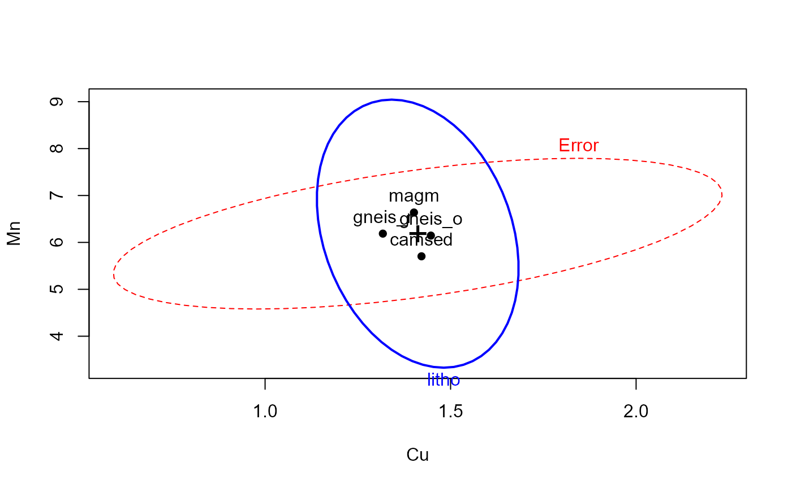
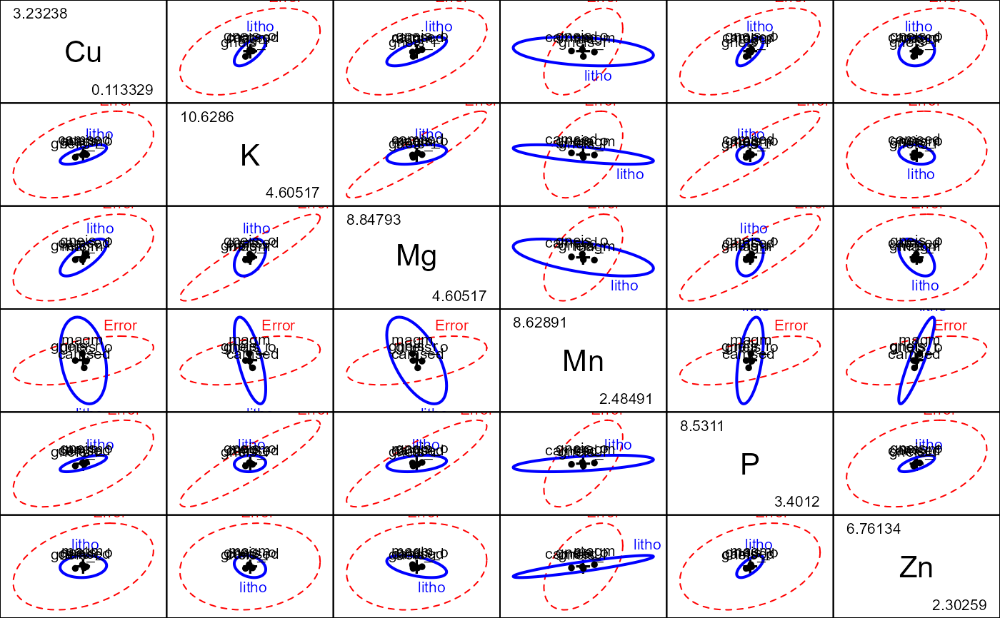

Oslo Transect Subset Data
Oslo.RdThe Oslo data set contains chemical concentrations of
332 samples of different plant species collected along a 120 km transect running through the city of Oslo, Norway.
It is a subset of the OsloTransect data provided by the
rrcov package.
Usage
data(Oslo)Format
A data frame with 332 observations on the following 14 variables.
sitetransect site ID, a factor with levels
102103104105106107108109111112113114115116117118119121122123124125126127128129131132133134135136138139141142143144XCX coordinate, a numeric vector
YCY coordinate, a numeric vector
forestforest type, a factor with levels
birsprmixdecpinesprbirsprpinspruceweatherweather type, a factor with levels
cloudmoistnicerainlitholithological type, a factor with levels
camsed(Cambro-Silurian sedimentary),gneis_o(Precambrian gneisses - Oslo),gneis_r(- Randsfjord),magm(Magmatic rocks)altitudealtitude, a numeric vector
CuCopper, a numeric vector
FeIron, a numeric vector
KPotassium, a numeric vector
MgMagnesium, a numeric vector
MnManganese, a numeric vector
PLead, a numeric vector
ZnZinc, a numeric vector
Details
The OsloTransect contains 360 observations, with 9 observations per site.
Only 7 chemical elements were retained from the 25 contained in the
OsloTransect data,
and these were all log-transformed, following Todorov and Filzmoser (2009).
Only complete cases on these variables were retained, and two lithological types of low frequency were removed, leaving 332 observations.
Source
Reimann, C., Arnoldussen, A., Boyd, R., Finne, T.E., Koller, F., Nordgulen, Oe., And Englmaier, P. (2007) Element contents in leaves of four plant species (birch, mountain ash, fern and spruce) along anthropogenic and geogenic concentration gradients, The Science of the Total Environment, 377, 416-433.
References
Todorov V. and Filzmoser P. (2009) Robust statistic for the one-way MANOVA, submitted to the Journal of Environmetrics.
Examples
data(Oslo)
table(Oslo$litho)
#>
#> camsed gneis_o gneis_r magm
#> 98 89 32 113
Oslo.mod <- lm(cbind(Cu, K, Mg, Mn, P, Zn) ~ litho, data=Oslo)
Anova(Oslo.mod)
#>
#> Type II MANOVA Tests: Pillai test statistic
#> Df test stat approx F num Df den Df Pr(>F)
#> litho 3 0.24655 4.8503 18 975 1.503e-10 ***
#> ---
#> Signif. codes: 0 '***' 0.001 '**' 0.01 '*' 0.05 '.' 0.1 ' ' 1
heplot(Oslo.mod, var=c("Cu", "Mn"))

pairs(Oslo.mod)

if (FALSE) {
if(require(candisc)) {
Oslo.can <- candisc(Oslo.mod)
Oslo.can
heplot(Oslo.can)
if(requireNamespace("rgl")){
heplot3d(Oslo.can, shade=TRUE, wire=FALSE, alpha=0.5, var.col="red")
}
}
}